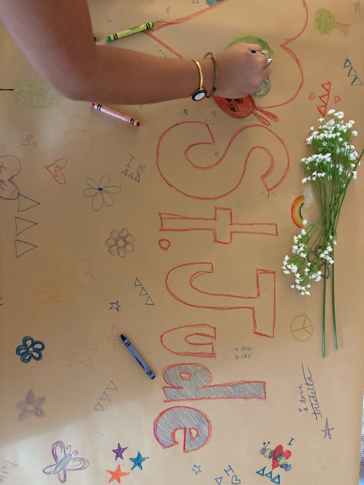
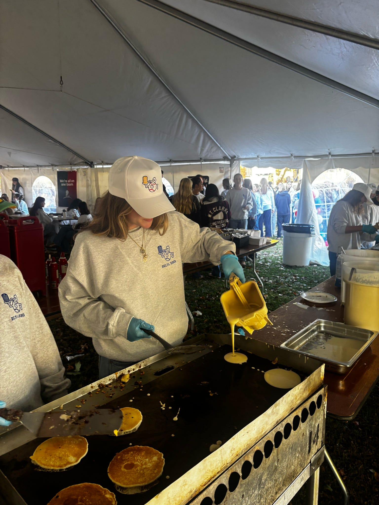
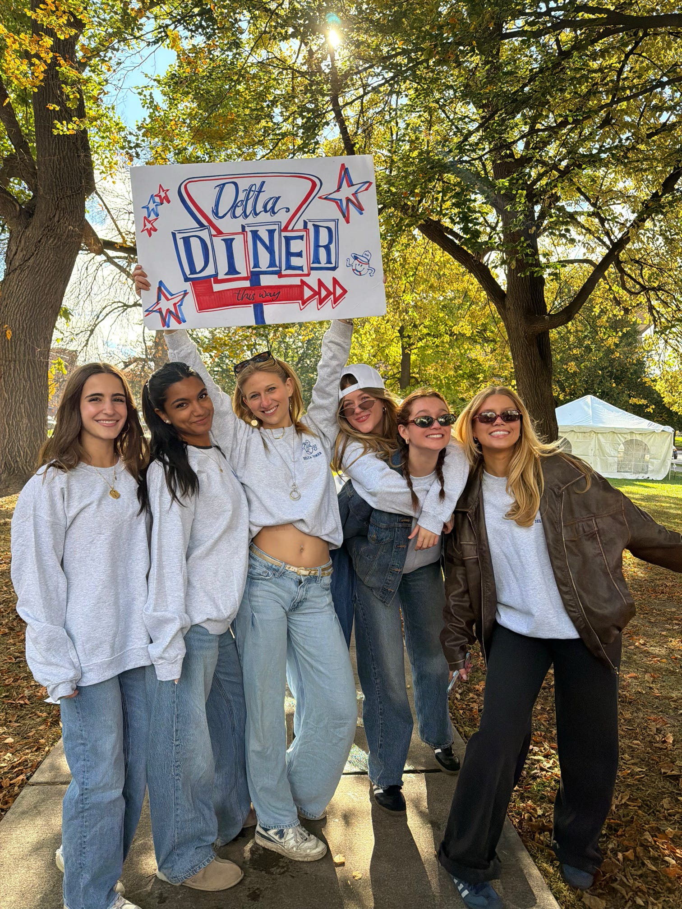

A Partnership with Purpose
Since 1999, Tri Delta has been an official partner of St. Jude Children's Research Hospital, and it's a cause that means something personal to almost every sister I know. St. Jude's mission is simple but massive: find cures for childhood cancer and other life-threatening diseases, and make sure that no family ever receives a bill from St. Jude for treatment, travel, housing, or food. As Tri Deltas, we see our role in that mission as a direct extension of the self-sacrifice our founders built the sorority on.

How We Raise Funds
Throughout the year, our chapter runs a lineup of philanthropy events that make fundraising fun for the whole Syracuse community, not just our sisters:
- Tri Delta Pancake – our version of Tri Delta's national “Delta House of Pancakes” (DHOP) breakfast, where sisters flip pancakes for donations from students and the Syracuse community
- Dunk a Delta – a dunk tank event where sisters (and a few good sports from other chapters) take the plunge for donations
- Delta Drive – our chapter-wide fundraising push, where every sister sets a personal goal and works to hit it before the deadline
We also take part in Tri Delta's national “Sincerely Yours” letter-writing campaign, where sisters write personal letters asking friends and family to donate directly to St. Jude.


The Impact
These small, grassroots efforts add up to something huge. In June 2024, Tri Delta announced it had raised $100 million for St. Jude since the partnership began in 1999 — making it the first Greek organization in history to reach that milestone. Some of that money helped build Tri Delta Place, a short-term housing facility on the St. Jude campus with 64 hotel-style rooms and 36 suites, giving patient families a home away from home while their kids receive treatment. Tri Delta has already set its sights on the next goal: raising an additional $85 million by 2038, the 150th anniversary of the sorority's founding.
Every pancake sold, every dunk tank splash, and every letter written adds up to real change for kids and families who need it most — and that's what makes this the part of Tri Delta I'm proudest to be part of.